An Introduction to MapServer¶
- Author:
Jeff McKenna
- Contact:
jmckenna at gatewaygeomatics.com
- Author:
David Fawcett
- Contact:
david.fawcett at moea.state.mn.us
- Author:
Howard Butler
- Contact:
hobu.inc at gmail.com
- Last Updated:
2026-06-02
MapServer Overview¶
MapServer is a popular Open Source project whose purpose is to display dynamic spatial maps over the Internet. Some of its major features include:
support for display and querying of hundreds of raster, vector, and database formats
ability to run on various operating systems (Windows, Linux, Mac OS X, etc.)
support for popular scripting languages and development environments (PHP, Python, Perl, Ruby, Java, .NET)
on-the-fly projections
high quality rendering
fully customizable application output
many ready-to-use Open Source application environments
In its most basic form, MapServer is a CGI program that sits inactive on your Web server. When a request is sent to MapServer, it uses information passed in the request URL and the Mapfile to create an image of the requested map. The request may also return images for legends, scale bars, reference maps, and values passed as CGI variables.
See also
The Glossary contains an overview of many of the jargon terms in this document.
MapServer can be extended and customized through MapScript or templating. It can be built to support many different vector and raster input data formats, and it can generate a multitude of output formats. Most pre-compiled MapServer distributions contain most all of its features.
See also
Note
MapScript provides a scripting interface for MapServer for the construction of Web and stand-alone applications. MapScript can be used independently of CGI MapServer, and it is a loadable module that adds MapServer capability to your favorite scripting language. MapScript currently exists in PHP, Perl, Python, Ruby, Tcl, Java, and .NET flavors.
This guide will not explicitly discuss MapScript, check out the MapScript Reference for more information.
Anatomy of a MapServer Application¶
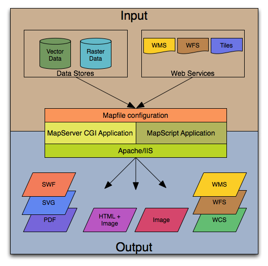
The basic architecture of MapServer applications.¶
A simple MapServer application consists of:
Map File - a structured text configuration file for your MapServer application. It defines the area of your map, tells the MapServer program where your data is and where to output images. It also defines your map layers, including their data source, projections, and symbology. It must have a .map extension or MapServer will not recognize it.
See also
Geographic Data - MapServer can utilize many geographic data source types. The default format is the ESRI Shape format. Many other data formats can be supported, this is discussed further below in Adding data to your site.
See also
HTML Pages - the interface between the user and MapServer . They normally sit in Web root. In it’s simplest form, MapServer can be called to place a static map image on a HTML page. To make the map interactive, the image is placed in an HTML form on a page.
CGI programs are ‘stateless’, every request they get is new and they don’t remember anything about the last time that they were hit by your application. For this reason, every time your application sends a request to MapServer, it needs to pass context information (what layers are on, where you are on the map, application mode, etc.) in hidden form variables or URL variables.
A simple MapServer CGI application may include two HTML pages:
Initialization File - uses a form with hidden variables to send an initial query to the web server and MapServer. This form could be placed on another page or be replaced by passing the initialization information as variables in a URL.
Template File - controls how the maps and legends output by MapServer will appear in the browser. By referencing MapServer CGI variables in the template HTML, you allow MapServer to populate them with values related to the current state of your application (e.g. map image name, reference image name, map extent, etc.) as it creates the HTML page for the browser to read. The template also determines how the user can interact with the MapServer application (browse, zoom, pan, query).
See also
MapServer CGI - The binary or executable file that receives requests and returns images, data, etc. It sits in the cgi-bin or scripts directory of the web server. The Web server user must have execute rights for the directory that it sits in, and for security reasons, it should not be in the web root. By default, this program is called mapserv
Note
It is strongly recommended to review the security steps for the MAP= call to the MapServer executable, by setting MS_MAP_PATTERN or MS_MAP_NO_PATH or hiding the MAP= parameter on public servers, as recommended in the document Limit Mapfile Access. All possible environment variables to secure your server are listed in Environment Variables.
Web/HTTP Server - serves up the HTML pages when hit by the user’s browser. You need a working Web (HTTP) server, such as Apache or Microsoft Internet Information Server, on the machine on which you are installing MapServer.
Installation and Requirements¶
Hardware Requirements¶
MapServer runs on Linux, Windows, Mac OS X, Solaris, and more. To compile or install some of the required programs, you may need administrative rights to the machine. People commonly ask questions about minimum hardware specifications for MapServer applications, but the answers are really specific to the individual application. For development and learning purposes, a very minimal machine will work fine. For deployment, you will want to investigate Optimization of everything from your data to server configuration.
Software Requirements¶
You need a working and properly configured Web (HTTP) server, such as Apache or Microsoft Internet Information Server, on the machine on which you are installing MapServer.
If you are on a Windows machine, and you don’t have a web server installed, it is recommended that you use MS4W, which will install a pre-configured web server, MapServer, MapCache, PHP, TinyOWS, and many more utilities. Windows users can optionally check out the OSGeo4W installer as well.
This introduction will assume you are using an MS4W installation to follow along. Obtaining MapServer on Linux or Mac OS X should be straightforward. Visit Download for installing pre-compiled MapServer builds on Mac OS X and Linux.
Note
The OSGeo-Live virtual machine contains MapServer ready to use as well.
You will also need a Web browser, and a text editor (vi, emacs, notepad++, textpad, homesite) to modify your HTML and mapfiles.
Tip
Notepad++ users can follow these steps to add syntax coloring to .map files.
Skills¶
In addition to learning how the different components of a MapServer application work together and learning Map File syntax, building a basic application requires some conceptual understanding and proficiency in several skill areas.
You need to be able to create or at least modify HTML pages and understand how HTML forms work. Since the primary purpose of a MapServer application is to create maps, you will also need to understand the basics of geographic data and likely, map projections. As your applications get more complex, skills in SQL, DHTML/Javascript, Java, databases, expressions, compiling, and scripting may be very useful.
Secure your installation¶
During your installation and configuration, it is strongly recommended to review the security steps for the MAP= call to the MapServer executable, by setting MS_MAP_PATTERN or MS_MAP_NO_PATH or hiding the MAP= parameter on public servers, as recommended in the document Limit Mapfile Access. All possible environment variables to secure your server are listed in Environment Variables.
Windows Installation¶
Note
Pre-compiled binaries for MapServer are available from a variety of sources, refer to the Windows section of the Downloads page.
MS4W (MapServer for Windows) is the long-time installer that contains the Apache Web server, MapServer, and all of its dependencies and tools; MS4W also contains several add-on packages, that contain over 60+ pre-configured MapServer configuration files (mapfiles) and data. The following steps illustrate how to install MS4W:
Download MS4W (this example will use the -setup.exe file) from https://ms4w.com/
Execute (double-click) the .exe
Click the “Agree” button, to accept the license.
Note
MS4W uses the very open MIT/X license.
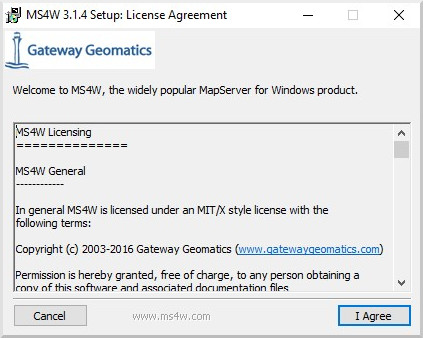
Select packages to install. Be sure to also select the “MapServer Itasca Demo Application”, as we will be using this demo later.
Note
You can optionally install other packages, by clicking the checkbox beside the package name.
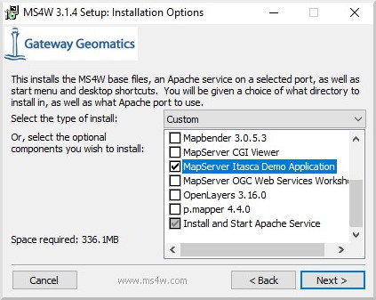
Click the “Next” button
Click the “Browse…” button, to choose an installation path. You can safely leave the default (C:/), and the installer will create C:/ms4w.
Note
Folders with spaces are supported, if you are using the -setup.exe installer.
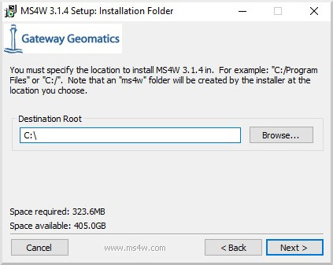
Click the “Next” button
Enter a port number to use for the Apache service. In most cases you can leave the port as 80, unless something is using that port such as an IIS service.
Note
You can specify any number above 1024, such as 8081 or 8082.
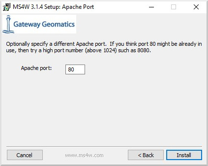
Click the “Install” button
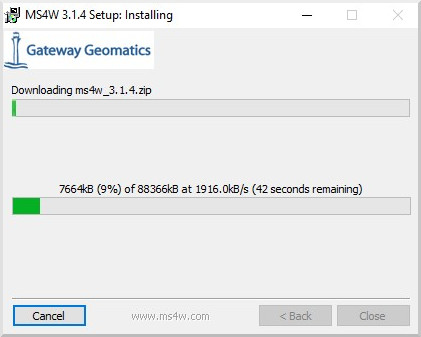
Once you see a message of “Installer Complete”, then click the “Close” button
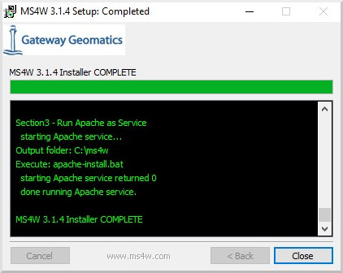
On your desktop, click on the “MS4W-Localhost” shortcut, and your browser should open http://127.0.0.1 that loads an MS4W introduction page.
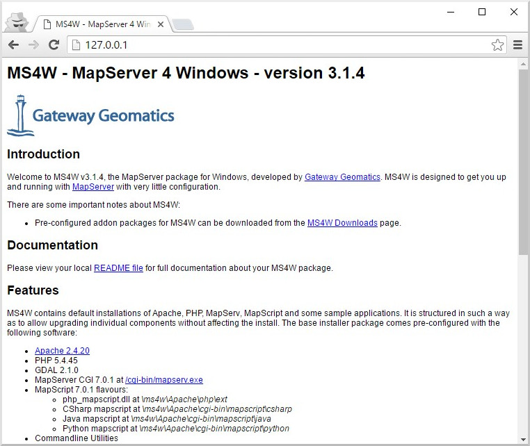
Verify that MapServer is working, by clicking on the /cgi-bin/mapserv.exe link in the “Features” section of the page.
Note
If MapServer is working properly, you will receive a message stating: “No query information to decode. QUERY_STRING is set, but empty.”
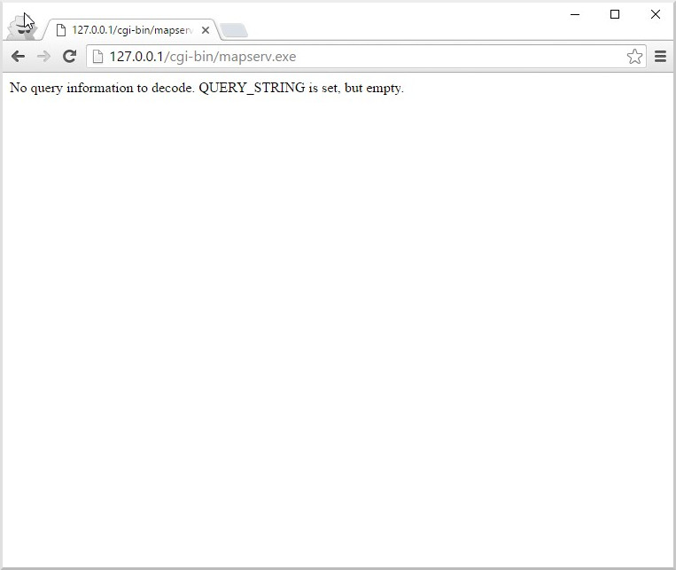
Introduction to the Mapfile¶
The .map file is the basic configuration file for data access and styling for MapServer. The file is an ASCII text file, and is made up of different objects. Each object has a variety of parameters available for it. All .map file (or mapfile) parameters are documented in the mapfile reference. A simple mapfile example displaying only one layer follows, as well as the map image output:
Tip
Notepad++ users can follow these steps to add syntax coloring to .map files.
MAP
NAME "sample"
STATUS ON
SIZE 600 400
SYMBOLSET "../etc/symbols.txt"
EXTENT -180 -90 180 90
UNITS DD
SHAPEPATH "../data"
IMAGECOLOR 255 255 255
FONTSET "../etc/fonts.txt"
#
# Start of web interface definition
#
WEB
IMAGEPATH "/ms4w/tmp/ms_tmp/"
IMAGEURL "/ms_tmp/"
END # WEB
#
# Start of layer definitions
#
LAYER
NAME 'global-raster'
TYPE RASTER
STATUS DEFAULT
DATA bluemarble.gif
END # LAYER
END # MAP
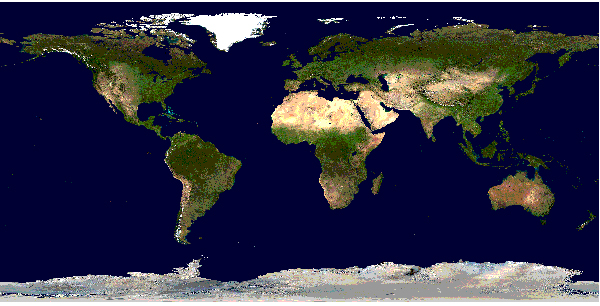
Rendered Bluemarble Image¶
Note
Comments in a mapfile are specified with a ‘#’ character. Since version 7.2 MapServer also supports single or multi-line C-style comments, as /* … */
MapServer parses mapfiles from top to bottom, therefore layers at the end of the mapfile will be drawn last (meaning they will be displayed on top of other layers)
Using relative paths is always recommended
Paths should be quoted (single or double quotes are accepted)
The above example is built on the following directory structure:
The mapfile could be placed anywhere, as long as it is accessible to the web server. Normally, one would try to avoid placing it at a location that makes it accessible on the web. Let us say it is placed in /home/msuser/mapfiles/
The location of the font file is given relative to the map file, in this case: /home/msuser/etc/fonts.txt
The location of the datasets (bluemarble.gif) is given relative to the map file, in this case: /home/msuser/data/
The location of the symbol file is given relative to the map file, in this case: /home/msuser/etc/symbols.txt
The files generated by MapServer will be placed in the directory /ms4w/tmp/ms_tmp/. The web server must be able to place files in this directory. The web server must make this directory available as /ms_tmp (if the web server is on www.ms.org, the web address to the directory must be: httpd://www.ms.org/ms_tmp/.
MAP Object¶
MAP
NAME "sample"
EXTENT -180 -90 180 90 # Geographic
SIZE 800 400
IMAGECOLOR 128 128 255
END # MAP
EXTENT is the output extent in the units of the output map
SIZE is the width and height of the map image in pixels
IMAGECOLOR is the default image background color
Tip
MapServer accepts colors in RGB values, or as a hexadecimal string.
Note
MapServer currently uses a pixel-center based extent model which is a bit different from what GDAL or WMS use.
LAYER Object¶
starting with MapServer 5.0, there is no limit to the number of layers in a mapfile
the DATA parameter is relative to the SHAPEPATH parameter of the MAP object
if no DATA extension is provided in the filename, MapServer will assume it is ESRI Shape format (.shp)
Raster Layers¶
LAYER
NAME "bathymetry"
TYPE RASTER
STATUS DEFAULT
DATA "bath_mapserver.tif"
END # LAYER
See also
Vector Layers¶
Vector layers of TYPE point, line, or polygon can be displayed. The following example shows how to display only lines from a TYPE polygon layer, using the OUTLINECOLOR parameter:
LAYER
NAME "world_poly"
DATA 'shapefile/countries_area.shp'
STATUS ON
TYPE POLYGON
CLASS
NAME 'The World'
STYLE
OUTLINECOLOR 0 0 0
END # STYLE
END # CLASS
END # LAYER
Tip
MapServer accepts colors in RGB values, or as a hexadecimal string.
See also
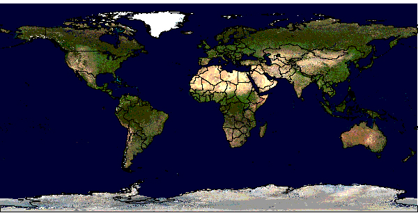
Rendered Bluemarble image with vector boundaries¶
CLASS and STYLE Objects¶
typical styling information is stored within the CLASS and STYLE objects of a LAYER
starting with MapServer 5.0, there is no limit to the number of classes or styles in a mapfile
the following example shows how to display a road line with two colors by using overlaid STYLE objects
CLASS
NAME "Primary Roads"
STYLE
SYMBOL "circle"
COLOR 178 114 1
SIZE 15
END # STYLE
STYLE
SYMBOL "circle"
COLOR 254 161 0
SIZE 7
END # STYLE
END # CLASS
Tip
MapServer accepts colors in RGB values, or as a hexadecimal string.
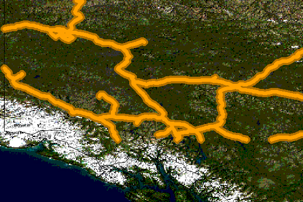
Rendered Bluemarble image with styled roads¶
SYMBOLs¶
can be defined directly in the mapfile, or in a separate file
the separate file method must use the SYMBOLSET parameter in the MAP object:
MAP
NAME "sample"
EXTENT -180 -90 180 90 # Geographic
SIZE 800 400
IMAGECOLOR 128 128 255
SYMBOLSET "../etc/symbols.txt"
END # MAP
where symbols.txt might contain:
SYMBOL
NAME "ski"
TYPE PIXMAP
IMAGE "ski.png"
END # SYMBOL
and the mapfile would contain:
LAYER
...
CLASS
NAME "Ski Area"
STYLE
SYMBOL "ski"
END # STYLE
END # CLASS
END # LAYER
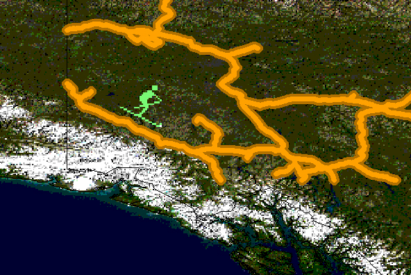
Rendered Bluemarble image with skier symbol¶
LABEL¶
defined within a CLASS object
the LABELITEM parameters in the LAYER object can be used to specify an attribute in the data to be used for labeling. The label is displayed by the FONT, declared in the FONTSET file (set in the MAP object). The FONTSET file contains references to the available font names. ENCODING describes which encoding is used in the file (see Display of International Characters in MapServer).
An example LABEL object that references one of the above fonts might look like:
LABEL
FONT "sans-bold"
TYPE truetype
ENCODING "UTF-8"
SIZE 10
POSITION LC
PARTIALS FALSE
COLOR 100 100 100
OUTLINECOLOR 242 236 230
END # LABEL
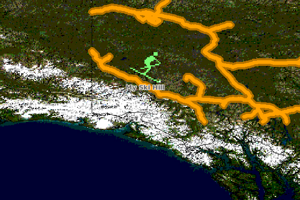
Rendered Bluemarble image with skier symbol and a label¶
CLASS Expressions¶
MapServer supports three types of CLASS Expressions in a LAYER (CLASSITEM in LAYER determines the attribute to be used for the two first types of expressions):
String comparisons
EXPRESSION "africa"
Regular expressions
EXPRESSION /^9|^10/
Logical expressions
EXPRESSION ([POPULATION] > 50000 AND '[LANGUAGE]' eq 'FRENCH')
Note
Logical expressions should be avoided wherever possible as they are very costly in terms of drawing time.
See also
INCLUDE¶
Added to MapServer 4.10, any part of the mapfile can now be stored in a separate file and added to the main mapfile using the INCLUDE parameter. The filename to be included can have any extension, and it is always relative to the main .map file. Here are some potential uses:
LAYERs can be stored in files and included to any number of applications
STYLEs can also be stored and included in multiple applications
The following is an example of using mapfile includes to include a layer definition in a separate file:
If ‘shadedrelief.lay’ contains:
LAYER
NAME 'shadedrelief'
STATUS ON
TYPE RASTER
DATA 'GLOBALeb3colshade.jpg'
END # LAYER
therefore the main mapfile would contain:
MAP
...
INCLUDE "shadedrelief.lay"
...
END # MAP
The following is an example of a mapfile where all LAYER s are in separate .lay files, and all other objects (WEB, REFERENCE, SCALEBAR, etc.) are stored in a “.ref” file:
MAP
NAME "base"
#
# include reference objects
#
INCLUDE "../templates/template.ref"
#
# Start of layer definitions
#
INCLUDE "../layers/usa/usa_outline.lay"
INCLUDE "../layers/canada/base/1m/provinces.lay"
INCLUDE "../layers/canada/base/1m/roads_atlas_of_canada_1m.lay"
INCLUDE "../layers/canada/base/1m/roads_atlas_of_canada_1m_shields.lay"
INCLUDE "../layers/canada/base/1m/populated_places.lay"
END # MAP
Warning
Mapfiles must have the .map extension or MapServer will not recognize them. Include files can have any extension you want, however.
See also
Get MapServer Running¶
You can test if MapServer is working by running the MapServer executable (mapserv) with the -v parameter on the command line (./mapserv -v).
MS4W users that installed through the -setup.exe installer, can use the MS4W-Shell shortcut on the desktop, and then run mapserv -v at the commandline. MS4W users who did not use the -setup.exe installer can open a Command Prompt window, cd to their installation folder, and then execute setenv.bat, before testing a mapserv -v command.
Depending on your configuration, the output could be something like this:
MapServer version 7.0.1 (MS4W 3.1.4) OUTPUT=PNG OUTPUT=JPEG OUTPUT=KML
SUPPORTS=PROJ SUPPORTS=AGG SUPPORTS=FREETYPE SUPPORTS=CAIRO SUPPORTS=ICONV
SUPPORTS=FRIBIDI SUPPORTS=WMS_SERVER SUPPORTS=WMS_CLIENT SUPPORTS=WFS_SERVER
SUPPORTS=WFS_CLIENT SUPPORTS=WCS_SERVER SUPPORTS=SOS_SERVER SUPPORTS=FASTCGI
SUPPORTS=THREADS SUPPORTS=GEOS INPUT=JPEG INPUT=POSTGIS INPUT=OGR INPUT=GDAL
INPUT=SHAPEFILE
You can also send a HTTP request directly to the MapServer CGI program without passing any configuration variables (e.g. http://127.0.0.1/cgi-bin/mapserv.exe). If you receive the message, ‘No query information to decode. QUERY_STRING not set.’, your installation is working.
Get Demo Running¶
Warning
MS4W users do not have to do this step, as the above instructions already installed the demo. You should see a “MapServer Itasca Demo Application” section on the bottom of the page (after clicking the MS4W-Localhost shortcut).
Download the MapServer Demo. UnZip it and follow the directions in ReadMe.txt. You will need to move the demo files to their appropriate locations on your web server, and modify the Map File and HTML pages to reflect the paths and URLs of your server. Next, point your browser to init.html and hit the ‘initialize button’. If you get errors, verify that you have correctly modified the demo files.
Making the Site Your Own¶
Now that you have a working MapServer demo, you can use the demo to display your own data. Add new LAYERs to your Map file that refer to your own geographic data layers (you will probably want to delete the existing layers or set their status to OFF).
Unless you are adding layers that fall within the same geographic area as the demo, modify MAP EXTENT to match the extent of your data. To determine the extent of your data, you can use ogrinfo. If you have access to a GIS, you could use that as well. The MAP EXTENT needs to be in the units of your output projection.
If you add geographic data layers with different geographical reference systems, you will need to modify your Map File to add a PROJECTION block to the MAP (defines the output projection / geographical reference system) and each of the LAYERs (defines the geographical reference system of the layer dataset).
Adding Data to Your Site¶
MapServer supports several data input formats ‘natively’, and many more if it is compiled with the Open Source libraries GDAL and OGR.
Vector Data¶
Vector data includes features made up of points, lines, and polygons. MapServer support the ESRI Shape format by default, but it can be compiled to support spatially enabled databases such as PostgreSQL-PostGIS, and file formats such as Geography Markup Language (GML), MapInfo, delimited text files, and more formats with OGR Vector Layers Through MapServer.
See the Vector Data reference for examples on how to add different geographic data sources to your MapServer project.
Raster Data¶
Raster data is image or grid data. Through GDAL, MapServer supports most raster formats - see the GDAL format list. More specific information can be found in the Raster Data reference.
Note
Since version 6.2 MapServer relies on GDAL for all raster access.
Projections¶
Because the earth is round and your monitor (or paper map) is flat, distortions will occur when you display geographic data in a two-dimensional image. Projections allow you to represent geographic data on a flat surface. In doing so, some of the original properties (e.g. area, direction, distance, scale or conformity) of the data will be distorted. Different projections excel at accurately portraying different properties.
With MapServer, if you keep all of your spatial data sets in the same projection (or unprojected Latitude and Longitude), you do not need to include any projection info in your Map File. In building your first MapServer application, this simplification is recommended.
On-the-fly projection can be accomplished when MapServer is compiled with PROJ support. Instructions on how to enable PROJ support on Windows can be found on the Wiki.
Enhancing your site¶
Adding Query Capability¶
There are two primary ways to query spatial data. Both methods return data through the use of templates and CGI variable replacement. A QUERYMAP can be used to map the results of the query.
To be queryable, each mapfile LAYER must have a TEMPLATE defined, or each CLASS within the LAYER must have a TEMPLATE defined. More information about the CGI variables used to define queries can be found in the MapServer CGI Reference.
Attribute queries¶
The user selects features based on data associated with that feature. ‘Show me all of the lakes where depth is greater than 100 feet’, with ‘depth’ being a field in the Shape dataset or the spatial database. Attribute queries are accomplished by passing query definition information to MapServer in the URL (or form post). Mode=itemquery returns a single result, and mode=itemnquery returns multiple result sets.
The request must also include a QLAYER, which identifies the layer to be queried, and a QSTRING which contains the query string. Optionally, QITEM, can be used in conjunction with QSTRING to define the field to be queried. Attribute queries only apply within the EXTENT set in the map file.
Spatial queries¶
The user selects features based on a click on the map or a user-defined selection box. Again the request is passed through a URL or form post. By setting mode=QUERY, a user click will return the one closest feature. In mode=NQUERY, all features found by a map click or user-defined selection box are returned. Additional query options can be found in the CGI documentation.
Interfaces¶
See: OpenLayers https://openlayers.org, GeoMOOSE https://geomoose.org
Note
MS4W users can install both OpenLayers and GeoMOOSE as ready-to-use packages.
Data Optimization¶
Data organization is at least as important as hardware configuration in optimizing a MapServer application for performance. MapServer is quite efficient at what it does, but by reducing the amount of processing that it needs to do at the time of a user request, you can greatly increase performance. Here are a few rules:
Index Your data - By creating spatial indexes for your Shape datasets using shptree. Spatial indexes should also be created for spatially aware databases such as PostGIS and Oracle Spatial.
Tile Your Data - Ideally, your data will be ‘sliced up’ into pieces about the size in which it will be displayed. There is unnecessary overhead when searching through a large vector dataset or image of which you are only going to display a small area. By breaking the data up into tiles and creating a tile index, MapServer only needs to open up and search the data files of interest. The GDAL commandline utilities ogrtindex (for vectors) and gdaltindex (for rasters) allow indexing of any supported GDAL driver/format. For more information (and detailed steps) see Tile Indexes. If you need to only index shapefiles, you can use the tile4ms MapServer utility.
Pre-Classify Your Data - MapServer allows for the use of quite complex EXPRESSIONs to classify data. However, using logical and regular expressions is more resource intensive than string comparisons. To increase efficiency, you can divide your data into classes ahead of time, create a field to use as the CLASSITEM and populate it with a simple value that identifies the class, such as 1,2,3, or 4 for a four class data set. You can then do a simple string comparison for the class EXPRESSION.
Pre-Process Your Images - Do resource intensive processing up front. See the Raster Data reference for more info.
Generalize for Overview - create a more simple, generalized data layer to display at small scales, and then use scale-dependent layers utilizing LAYER MINSCALE and LAYER MAXSCALE to show more detailed data layers as the user zooms in. This same concept applies to images.
See also
How do I get Help?¶
Documentation¶
Users Mailing List¶
Register and post questions to the MapServer Users mailing list. Questions to the list are usually answered quickly and often by the developers themselves. A few things to remember:
Search the archives for your answer first, people get tired of answering the same questions over and over.
Provide version and configuration information for your MapServer installation, and relevant snippets of your map and template files.
Always post your responses back to the whole list, as opposed to just the person who replied to your question.
Matrix/IRC¶
MapServer users and developers can be found on Matrix, and on IRC (Internet Relay Chat). The MapServer room is bridged to allow communication through your choice of Matrix or IRC.
Matrix room is #mapserver:osgeo.org on matrix.osgeo.org.
IRC channel is #mapserver on irc.libera.chat.
Reporting bugs¶
Software bugs are reported on the MapServer issue tracker. Documentation bugs are reported on the MapServer documentation issue tracker.
Tutorial¶
Here is a quick tutorial for new users.
Test Suite (msautotest)¶
The msautotest folder in the MapServer repository contains test mapfiles and data for most MapServer functionality.
Books¶
Web Mapping Illustrated, a book by Tyler Mitchell that describes well and provides real-world examples for the use of Web mapping concepts, Open Source GIS software, MapServer, Web services, and PostGIS.
Mapping Hacks, by Schuyler Erle, Rich Gibson, and Jo Walsh, creatively demonstrates digital mapping tools and concepts. MapServer only appears in a handful of the 100 hacks, but many more are useful for concepts and inspiration.
Beginning MapServer: Opensource GIS Development, by Bill Kropla. According to the publisher, it covers installation and configuration, basic MapServer topics and features, incorporation of dynamic data, advanced topics, MapScript, and the creation of an actual application.